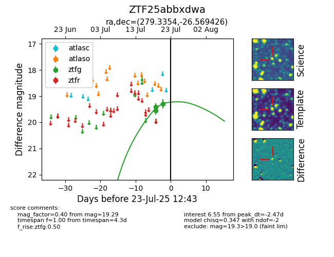

Target ZTF25abbxdwa at 2025-07-23 11:52, see:
FINK: fink-portal.org/ZTF25abbxdwa
Lasair: lasair-ztf.lsst.ac.uk/objects/ZTF25abbxdwa
ALeRCE: alerce.online/object/ZTF25abbxdwa
alt names
ZTF25abbxdwa (ztf,fink)
coordinates:
equatorial (ra, dec) = (279.3354,-26.56943)
galactic (l, b) = (7.5708,-8.91826)
photometry
last ztfg=19.29
3 ztfg detections
